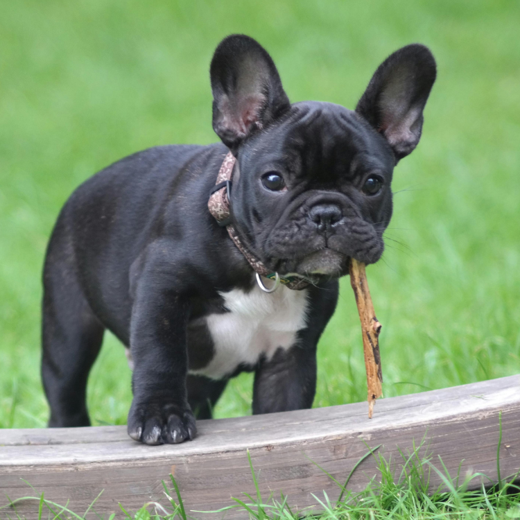

With increasing awareness of pet health, dog dental care has become a focal point for many pet owners. Dental chews are a popular choice for maintaining a dog’s oral health, but understanding how to use them correctly and selecting the right product is crucial. This article will address common questions about dog dental chews to help you better protect your dog’s dental health.
Brushing habits should be cultivated from a young age, while feeding dental chews should begin once the permanent teeth have emerged. Start introducing the toothbrush to your puppy early on, allowing them to get used to the sensation of brushing gradually. Reward your puppy after each brushing session to encourage a love for brushing. Once your dog’s baby teeth fall out and the permanent teeth come in (around six months old), it’s essential to brush their teeth daily and feed dental chews, especially focusing on the molars at the back of the mouth. Dental chews help clean areas that are difficult for toothbrushes to reach, ensuring oral health.
Dental chews can enhance the cleaning effect. When choosing dental chews, look for products with VOHC (Veterinary Oral Health Council) certification. VOHC-certified products have been verified by veterinary dental specialists and have data supporting their effectiveness. If the dental chews you choose do not have international VOHC certification, they might just be treats without real dental benefits.
You can feed your dog more than one dental chew per day, but it is advisable to reduce the amount of their main food accordingly. Dental chews are snacks and should not exceed 10% of the total daily caloric intake. If you feed your dog more than one dental chew per day, adjust the main food portion to avoid excessive calorie intake.
Dental chews can be given after meals, before brushing, or after brushing, but it is recommended to feed them after brushing. This way, they can serve as a reward for brushing and enhance the cleaning effect.
When selecting dental chews, consider the following points:
The best way for a dog to eat dental chews is by gnawing with their back teeth. Dental chews are designed to help clean the teeth at the back of the mouth. Observe how your dog eats the chew. Ideally, they should use their paws to hold the chew and gnaw with their back teeth. If your dog tends to swallow food whole, you can hold one end of the chew while letting them gnaw on the other end, ensuring they chew thoroughly before swallowing.
Yes, they are effective. Dental chews clean teeth through the mechanical action of chewing. Even if the chew breaks, as long as there is chewing involved, it can still achieve the cleaning effect.
If bad breath persists, take your dog to the vet as soon as possible. Healthy dogs should not have bad breath. If there is a persistent odor, it might indicate underlying oral health issues such as a dental abscess that require a comprehensive check-up.
Dental chews work through physical abrasion to help remove plaque from teeth. Some dental chews also include ingredients that inhibit plaque growth and can even provide nutritional benefits to your dog.
With the rising status of pets in households, pet owners are paying more attention to their dogs’ and cats’ health. Dental care is crucial not only for improving bad breath but also for preventing periodontal disease and other complications. Therefore, choosing the right dental chews is vital for your dog’s oral health. Regular brushing combined with the use of dental chews, along with regular veterinary check-ups, ensures your dog maintains healthy teeth and gums.
Here are selected products from Amazon to assist in your decision-making. Links may contain affiliate marketing programs, where clicking and purchasing may generate a small commission for us (at no additional cost to you), helping maintain our website operations.
Based on our previous discussions on choosing dental chews, PEDIGREE DENTASTIX Dog Dental Care Treats meet several criteria. Here’s why we recommend them:
Based on size and flavor, we recommend three products:
Want to gain a deeper understanding of dog behavior and how to care for them? Click the link below to read more related articles. read more related articles